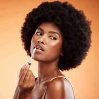

-
Moisturizer
Use the right moisturizer for your skin type before applying makeup.
-
Primer
Apply primer to smooth out skin texture and help makeup last longer.
-
Liquid Foundation
Pick a shade matching your skin and apply it from the center of your face outwards.
-
Concealer
Use two concealers: one matching your skin tone for blemishes, and one lighter for highlights.
-
FOUNDATION POWDER
Applying foundation powder can be tricky; too little is ineffective, too much creates a "cake look". Use these tips for a flawless complexion.
Start by dusting a light coat using a fluffy brush. For areas needing more coverage, press the brush firmly into the skin.
-
BRONZER
To get a sun-kissed glow, apply bronzer with a dense brush. Choose a shade no more than two shades darker than your skin.
How to Apply Bronzer: Start at your forehead, sweep along your cheeks, and down your jawline, forming a "3".
-
BRONZER
To get a sun-kissed glow, apply bronzer with a dense brush. Choose a shade no more than two shades darker than your skin.
How to Apply Bronzer: Start at your forehead, sweep along your cheeks, and down your jawline, forming a "3".
-
HIGHLIGHTER
Highlight key areas: nose bridge, cheekbones, eyelids, brow bone, Cupid's Bow, forehead, chin. Use liquid, cream, or powder.
-
EYESHADOW
Use two shades: lighter across the lid, darker in the outer corners. Blend for a natural look.
-
EYELINER
Types: Liquid for precision, gel for cat-eye, pencil for smoky. Apply close to the lash line.
-
MASCARA
Curl lashes before applying. Wriggle the brush at the roots, then pull through. Use a clean brush if clumps appear.
-
LIP GLOSS
Prep lips with a scrub and balm. Apply gloss from the center, avoiding the edges of your lips.

-
SETTING SPRAY & POWDER
Apply setting spray in an X and T pattern to lock in makeup.